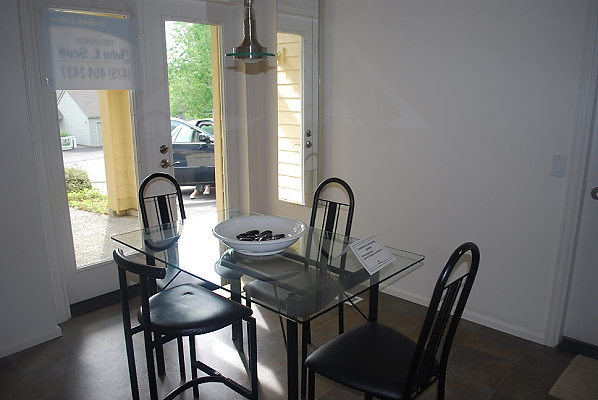

|

Kitchen nook that has a door to the garage as well as one of the outside doors. This makes it easy to move groceries from the garage to the kitchen. So it serves 3 functions -a breakfast place, a passageway to the first garage and an outside door. Nook is 8 ft X 11 ft. The nook at one end of the kitchen in our Ohio home is 8 ft X 9.5 Ft. |